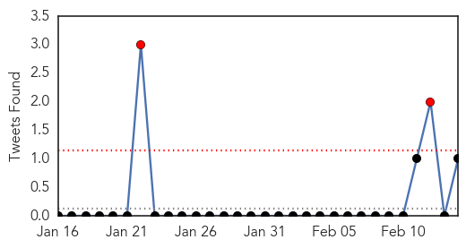
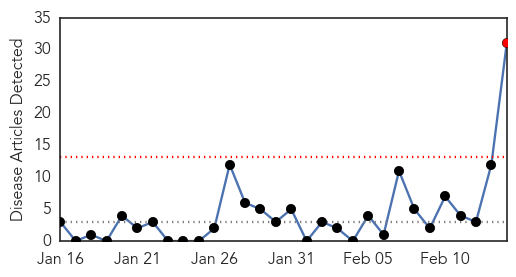

Influenza
30-Day Web Trend
0 alerts, 0 warnings

30-Day Twitter Trend
2 alerts, 0 warnings

Article Locations


Article Confidences

Top Articles:
- 0.987
- Vietnam halts poultry imports from China
- 0.984
- Spike in flu cases sees 26 hospitalised in past week
- 0.977
- Flu Activity Now Widespread in Maine
- 0.971
- Bird flu kills two siblings in northeastern Cambodia
- 0.962
- Daily Express Newspaper Online, Sabah, Malaysia.
- 0.956
- 27 countries pre-empt dangerous diseases
- 0.928
- WHO warns of alarming surge in deadly bird flu
- 0.914
- Another Death Due To Bird Flu In China
- 0.903
- Threat of global disease outbreaks spawns 27-nation pact
- 0.884
- Sabah beefs up screening on foreigners for bird flu - Nation
- 0.850
- Tourists screened at KK airport following first case of avian flu - Nation
- 0.742
- PM urges action against avian flu
Top Tweets:
- 0.867
- Flu Fact Friday: Every year nearly 1500 Australian children are admitted to hospital with confirmed cases of influenza.
Measles
30-Day Web Trend
1 alerts, 0 warnings

30-Day Twitter Trend
0 alerts, 0 warnings

Article Locations

Article Confidences

Top Articles:
- 0.990
- To vaccinated BART riders: No need to worry about measles
- 0.972
- Measles-infected student may have exposed San Francisco BART passengers
- 0.964
- Measles warning
- 0.944
- Community at risk after UC Berkeley student with measles attends class, rides BART
- 0.929
- Did You Ride BART Feb 4-7? Then You Might Have Been Exposed To The Measles
- 0.916
- Health Department Investigates Measles Case on Oʻahu
- 0.913
- Health Officials Warn San Francisco BART-Riders Of Measles Exposure
- 0.907
- San Francisco Commuters Warned of Measles on BART
- 0.878
- Measles alert issued for California train riders
- 0.866
- Measles Exposure on BART From Cal Berkley University Student
- 0.842
- Bay Area Student May Have Exposed Thousands To Measles On Public Transit « CBS Sacramento
- 0.825
- Bay Area officials warn of measles exposure
- 0.822
- Measles alert issued for California train riders
- 0.792
- Measles Exposure U.C. Berkeley
- 0.789
- UNICEF helps Guinea vaccinate children against measles
- 0.782
- A UC Berkeley Student With Measles Attended Class And Rode The BART, Health Officials Warn
- 0.778
- Health officials: Student infected with measles may have spread illness on BART, UC Berkeley campus
- 0.743
- Calif. officials warn of possible measles exposure
- 0.743
- Register-Pajaronian California officials warn of measles exposure
- 0.741
- California officials warn of measles exposure - MyNorthwest
- 0.722
- Myths about life-saving vaccines busted
- 0.692
- UNICEF speaks out against 133 child killings in Central African Republic
- 0.669
- UNICEF horrified at cruelty against children in Central African Republic conflict
- 0.657
- Berkeley student who used BART may have exposed many to measles
- 0.651
- BART rider & UC Berkeley student infected with measles potentially exposed thousands
- 0.646
- UNICEF ‘horrified’ at cruelty against children in Central African Republic conflict
- 0.625
- BART Riders May Have Been Exposed To Measles On Trains « CBS Sacramento
- 0.607
- California commuters warned: You might have the measles
- 0.588
- The Taliban are winning the war on polio - Laurie Garrett and Maxine Builder
- 0.544
- California Commuters Warned of Measles Risk
- 0.523
- TEMECULA: Students sent home after measles found
Top Tweets:
-
No tweets found for Feb 14, 2014